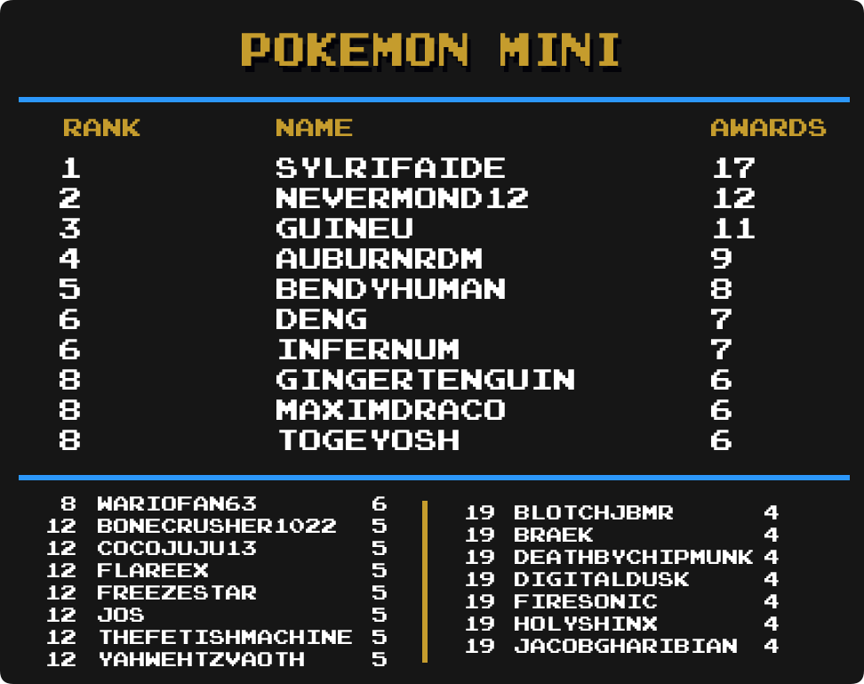

Top Masteries
 By
MrOwnership
By
MrOwnership
Contents
- Intro
- Current Champions
-
Category Rankings
- Total Awards (Including Hacks)
- Total Awards (Excluding Hacks)
- Events
- Arcade
- Atari 2600
- Game Boy
- Game Boy Advance
- Game Boy Color
- Game Gear
- Hack Champ
- Homebrew Champ
- Master System
- Mega Drive
- Nintendo 64
- NES
- Nintendo DS
- PC Engine
- PlayStation
- PlayStation Portable
- Pokémon Mini
- Saturn
- SNES
- Watara Supervision
Intro
We are going to take a look at another metric for greatness, Mastery Awards. Mastery awards are given to users when they complete every achievement for a given set in hardcore mode. Users wear mastery awards as a badge of honor on their profile page representing all the hard work they put into truly becoming a master of the game.
Below we will take a look at which users rank among the best with the most mastery awards in several categories well as notable updates from the previous month to each individual category. Check to see how you rank among the rest of the community members.
Special thanks to  Nydaxn for creating the ranking image templates.
Nydaxn for creating the ranking image templates.
Current Champions
|
|
|
Mastery Awards |
|---|---|---|
| Total Awards |  MaxMilyin MaxMilyin |
607 |
| 3DO Interactive Multiplayer |  guineu guineu |
4 |
| Apple II | guineu |
11 |
| Arcade |  DUT DUT |
50 |
| Atari 2600 |  PMniac PMniac |
87 |
| Atari 7800 | PMniac |
7 |
| Atari Jaguar | PMniac |
3 |
| Atari Lynx |
guineu,  russolini77 & russolini77 &  jared6502 jared6502
|
3 |
| ColecoVision | PMniac |
8 |
| Events |  televandalist televandalist |
25 |
| Game Boy |  Shootzy Shootzy |
110 |
| Game Boy Advance |  bonecrusher1022 bonecrusher1022 |
101 |
| Game Boy Color | guineu |
43 |
| Game Gear | Nydaxn |
51 |
| Hack Champ |  HolyShinx HolyShinx |
180 |
| Homebrew Champ |  AuburnRDM AuburnRDM |
105 |
| Intellivision |  Jungon Jungon |
9 |
| Magnavox Odyssey 2 |
guineu & Jungon
|
3 |
| Master System | Jungon |
53 |
| Mega Drive | DUT |
100 |
| MSX |  Blazekickn Blazekickn |
5 |
| Nintendo 64 |  Aquator Aquator |
34 |
| Neo Geo Pocket |  Nanashi Nanashi |
4 |
| NES |  SanMarino SanMarino |
229 |
| Nintendo DS |  Olafur Olafur |
33 |
| PC Engine |  Infernum Infernum |
31 |
| PC-8000/8800 |  malasdair malasdair |
8 |
| PC-FX |
 Annonith & Annonith &  YahwehTzVaoth YahwehTzVaoth
|
3 |
| PlayStation |  Alexxi Alexxi |
73 |
| PlayStation Portable |  minibt minibt |
18 |
| Pokémon Mini |  Sylrifaide Sylrifaide |
17 |
| Sega 32X |
 AgentRibinski, Aquator & AgentRibinski, Aquator &  Nevanos Nevanos
|
2 |
| Sega Saturn |  Boldewin Boldewin |
13 |
| Sega CD | Infernum |
4 |
| SG-1000 | PMniac |
6 |
| SNES |  danibodom danibodom |
161 |
| Vectrex |  QRS666 QRS666 |
2 |
| Virtual Boy |  Grahamtams Grahamtams |
5 |
| Watara Supervision |  Sarconius Sarconius |
41 |
| WonderSwan |  ShadwSonic ShadwSonic |
2 |
Category Rankings
Total Awards (Including Hacks)

-
MaxMilyin has taken over the top spot with 607 totals awards.
-
Infernum has jumped up 4 spots with 78 new mastery awards this month.
- 11 of the top 25 users had at least 10 new mastery awards this month.
Total Awards (Excluding Hacks)

-
 Xymjak has moved into 3rd place with 13 new mastery awards this month.
Xymjak has moved into 3rd place with 13 new mastery awards this month. -
Jungon has made it into the top 25 with 20 new mastery awards this month and is sitting in 22nd place.
Notable Milestones
- Congratulations to MaxMilyin and guineu for reaching over 600 mastery awards.
- Congratulations to Infernum and Xymjak for reaching over 500 mastery awards.
- Congratulations to ShadwSonic for reaching over 400 mastery awards.
- Congratulations to danibodom and
 BahamutVoid for reaching over 200 mastery awards.
BahamutVoid for reaching over 200 mastery awards. - Congratulations to
 xTyrea64,
xTyrea64,  Calsun,
Calsun,  Sef,
Sef,  TheJediSonic,
TheJediSonic,  renanbrj,
renanbrj,  zandro,
zandro,  EddieMcMerlin,
EddieMcMerlin,  GalacticSpear,
GalacticSpear,  Kiko and
Kiko and  LittleTiger for reaching over 100 mastery awards.
LittleTiger for reaching over 100 mastery awards.
Events

-
televandalist extends the 1st place lead with 2 new even awards this month.
-
 SlashTangent and
SlashTangent and  Snow have moved into a 4-way tie for 6th place.
Snow have moved into a 4-way tie for 6th place. -
 multonic has made it into the top 25 and is sitting in a 6-way tie for 21st place.
multonic has made it into the top 25 and is sitting in a 6-way tie for 21st place.
Arcade

-
DUT has reach 50 total mastery awards with 3 new ones this month..
-
 fabiotwotwo has made it into the top 25 and is sitting in a 4-way tie for 23rd place.
fabiotwotwo has made it into the top 25 and is sitting in a 4-way tie for 23rd place.
Atari 2600
-
Jungon moves up 2 places into 5th place with 5 new mastery awards this month.
-
 Xotoco has made it into the top 25 and is sitting in a 3-way tie for 16th place.
Xotoco has made it into the top 25 and is sitting in a 3-way tie for 16th place. -
Infernum has made it into the top 25 and is sitting in a 4-way tie for 21st place.
Game Boy

-
Shootzy remains on top with 110 mastery awards.
-
guineu and MaxMilyin are still tied in second, now with 89 mastery awards.
-
Infernum has made it into the top 25 and is sitting in 12th place.
Game Boy Advance
-
bonecrusher1022 has passed 100 mastery awards with 3 new ones this month.
-
 Lonoke31 has jumped up 4 spots into 7th place with 10 new master awards this month.
Lonoke31 has jumped up 4 spots into 7th place with 10 new master awards this month. -
 Andrevus and
Andrevus and  BlotchJBMR have made it into the top 25 and are both tied for 24th place.
BlotchJBMR have made it into the top 25 and are both tied for 24th place.
Game Boy Color
-
guineu remain on top with 43 master awards, but
 Bendyhuman and
Bendyhuman and  Andrey199650 are close by.
Andrey199650 are close by. -
ShadwSonic has jumped up 5 spots into a 4th place with 5 new mastery awards this month.
-
 FlareEX has made it into the top 25 and is sitting in a 5-way tie for 21st place.
FlareEX has made it into the top 25 and is sitting in a 5-way tie for 21st place.
Game Gear
-
Nydaxn remains in 1st place with 9 new mastery awards this month.
-
FlareEX has moved up 5 spots with 4 new mastery awards this month.
-
 tvis has made it into the top 25 and is in a 5 way tie for 16th place.
tvis has made it into the top 25 and is in a 5 way tie for 16th place. -
 FlamingDoom have made it into the top 25 and is sitting in a 10-way tie for 21th place.
FlamingDoom have made it into the top 25 and is sitting in a 10-way tie for 21th place.
Hack Champ

-
HolyShinx still has a commanding lead with 180 mastery awards.
-
Bendyhuman has taken the 3rd place spot with 4 new mastery awards this month.
-
 domenyX has made it into the top 25 and is sitting in 21st place.
domenyX has made it into the top 25 and is sitting in 21st place. -
 dericobanjo has made it into the top 25 and is sitting in 22nd place.
dericobanjo has made it into the top 25 and is sitting in 22nd place. -
 adamjohnny5 has made it into the top 25 and is in a 4-way tie for in 23rd place.
adamjohnny5 has made it into the top 25 and is in a 4-way tie for in 23rd place.
Homebrew Champ
-
AuburnRDM has surpassed 100 total mastery awards with 10 new ones this month.
-
Blazekickn has jumped into 3rd place with 5 new mastery awards this month.
-
 Tvols1480 has made it into the top 25 and is tied in 19th place.
Tvols1480 has made it into the top 25 and is tied in 19th place. -
Shootzy has made it into the top 25 and is tied in 24th place.
Master System

-
Jungon remains in 1st place 53 total mastery awards.
-
Infernum has jumped up 10 spots into 6th place with 4 new mastery awards this month.
-
 PlagueKBR has made it into the top 25 and is sitting in a 6-way tie for 12th place.
PlagueKBR has made it into the top 25 and is sitting in a 6-way tie for 12th place.
Mega Drive
-
DUT has reach 100 total master awards.
-
Infernum has jumped up 11 spots into 5th place with 12 new mastery awards this month.
-
 earfly has made it into the top 25 and is sitting in a 3-way tie for 24th place.
earfly has made it into the top 25 and is sitting in a 3-way tie for 24th place.
Nintendo 64
-
 BenTobitt is now just 1 mastery award away from 1st place.
BenTobitt is now just 1 mastery award away from 1st place. -
 Kryle has moved up 3 spots into a tie for 14th place.
Kryle has moved up 3 spots into a tie for 14th place. -
Blazekickn has moved up 7 spots into a 7-way tir for 16th place.
NES

-
SanMarino increases the lard lead in 1st place with 4 new mastery awards this month.
-
Xymjak has made it into the top 10 and is in a 3-way tie for 8th place.
Nintendo DS

-
Olafur has taken the sole ownership of the top spot with 7 new mastery awards this month.
-
 tinycyan has taken the sole ownership of 3rd place with 2 new mastery awards this month.
tinycyan has taken the sole ownership of 3rd place with 2 new mastery awards this month. -
xTyrea64 has made it into the top 25 and is sitting in a 4-way tie for 12th place.
-
 ChronoGear has made it into the top 25 and is sitting in a 4-way tie for 24th place.
ChronoGear has made it into the top 25 and is sitting in a 4-way tie for 24th place.
PC Engine

-
Infernum remains in the top spot with 1 new mastery award this month.
-
 marcelosnp has moved up 5 places into a tie for 4th place.
marcelosnp has moved up 5 places into a tie for 4th place.
PlayStation

-
Alexxi hold the lead but is only 1 ahead of Andrey199650.
-
 DungeonMaster has moved up 12 places into a 4-way tie for 10th place.
DungeonMaster has moved up 12 places into a 4-way tie for 10th place. -
 foxsevent has made it into the top 25 and is sitting in 23rd place.
foxsevent has made it into the top 25 and is sitting in 23rd place.
PlayStation Portable
-
minibt extends the 1st place lead with 1 new mastery awards this month.
-
 AlexGatao and Andrey199650 have jumped up multiple spots into a 5-way tie for 7th place.
AlexGatao and Andrey199650 have jumped up multiple spots into a 5-way tie for 7th place. -
 Valenstein has made it into the top 25 and is in a 3-way tie for 18th place.
Valenstein has made it into the top 25 and is in a 3-way tie for 18th place. -
 Retrokaiser has made it into the top 25 and is tied for 21st place.
Retrokaiser has made it into the top 25 and is tied for 21st place.
Pokémon Mini

-
Sylrifaide has take the top spot with 10 new mastery awards this month.
-
 WarioFan63 has made it into the top 25 and is in an 4-way tie for 8th place.
WarioFan63 has made it into the top 25 and is in an 4-way tie for 8th place.
Saturn

-
Boldewin continutes to dominate the Saturn leaderboard.
-
 IronInvoker47 has made it into the top 25 and is in a 6-way tied for 10th place.
IronInvoker47 has made it into the top 25 and is in a 6-way tied for 10th place. -
 ThatAmericanSlacker has made it into the top 25 and is in a 11-way tied for 16th place.
ThatAmericanSlacker has made it into the top 25 and is in a 11-way tied for 16th place.
SNES

-
danibodom extends their 1st place lead by 9 new mastery awards this month.
-
 Dehly has moved up 5 places into 15th place with 8 new mastery awards this month.
Dehly has moved up 5 places into 15th place with 8 new mastery awards this month. -
Infernum has made it into the top 25 and is sitting in 19th place.
Watara Supervision
-
Sarconius still has a healthy lead in the 1st place spot.
-
Infernum has moved into 3rd place with 2 new mastery awards this month.
-
 MaddieKittyTV has moved up 8 spots intoa 9-way tie for 12th place.
MaddieKittyTV has moved up 8 spots intoa 9-way tie for 12th place. -
Andrey199650 has made it into the top 25 and is in a 7-way tied for 25th place.